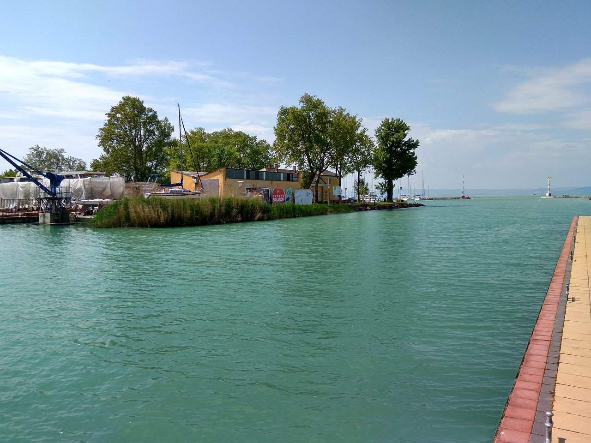
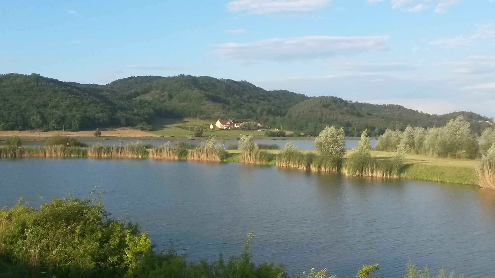

<div class="hero">
    <div class="container">
        <table class="table">
            <thead>
                <tr>
                    <th scope="col">Események</th>
                    <th scope="col"> Leírásuk</th>
                    <th scope="col">Képek</th>
                    <th scope="col">Hivatkozás</th>
                </tr>
            </thead>
            <tbody class="blue-bg">
                <tr>
                    <th  scope="row">Komárom</th>
                    <td> <br> 2024. március 23. (szombat)
                        <br> 2900 Komárom , WF Szabadidőpark <br>
                        <br> Komáromi horgász programok. Évadnyitó horgászverseny a WF Szabadidőpark
                        <br> horgásztaván 2024.március 23-án a WF Szabadidőparkban.
                        <br> Nevezési díj: 6.500,-Ft.
                    </td>
                    <td></td>
                    <td><button id="button1" type="button" class="btn btn-outline-primary"><a
                                href="https://www.programturizmus.hu/ajanlat-komarom-horgaszat.html">Részletek</a></button>
                    </td>
                </tr>
                <tr>
                    <th  scope="row">Röszke</th>
                    <td><br> 2024. március 23. (szombat)
                        <br> 6758 Röszke , (46.176136 x 20.048933)
                        <br> A Röszkei Sporthorgász és Természetvédő Egyesület által szervezett horgászversenyek.
                    </td>
                    <td></td>
                    <td><button id="button2" type="button" class="btn btn-outline-primary"><a
                                href="https://www.programturizmus.hu/ajanlat-horgaszverseny-roszke.html">Részletek</a></button>
                    </td>
                </tr>
                <tr>
                    <th  scope="row">Siófok</th>
                    <td><br> 2024. április 21. (vasárnap) - 2024. április 27. (szombat)
                        <br> 8600 Siófok ,

                        <br> A világ egyik legnagyobb pontyfogó versenye
                        <br> az IBCC Nemzetközi Balatoni Pontyfogó Kupa.
                        <br> A verseny nyílt nemzetközi csapatverseny.


                        <br> 2024-ben a rendezvény tervezett időpontja: április 21-27,
                        <br> helyszíne Siófok.
                    </td>

                    <td></td>
                    <td> <button id="button3" type="button" class="btn btn-outline-primary"><a
                                href="https://www.programturizmus.hu/ajanlat-pontyfogo-kupa.html">Részletek</a></button>
                    </td>
                </tr>
                <tr>
                    <th  scope="row">Bátonytenyere</th>
                    <td><br> 2024. április 27. (szombat) - 2024. április 28. (vasárnap)
                        <br> 3070 Bátonyterenye , Maconkai-víztározó (47.99437 x 19.849548)
                        <br> Megnézem a térképen
                        <br> 2024. évi horgászversenyek eseménynaptára
                        <br> a maconkai horgászparadicsomban.
                    </td>
                    <td> </td>
                    <td><button id="button4" type="button" class="btn btn-outline-primary"><a
                                href="https://www.programturizmus.hu/ajanlat-maconkai-viztarozo-horgaszversenyek.html">Részletek</a></button>
                    </td>

                </tr>
                <tr>
                    <th   scope="row">Bogács</th>
                    <td> <br> 2024. augusztus 29. (csütörtök)
                        <br> 3412 Bogács , Szoros-völgyi víztározó (47.914585 x 20.518908)
                        <br>„Halra Fel!” horgászverseny és országos horgásztalálkozó Bogácson,
                        <br> a Szoros-völgyi víztározónál 2024. augusztus 29-én. A fürdőváros
                        <br> nemcsak az üdülőket és gyógyulni vágyókat várja,
                        <br> de a horgászat szerelmesei is kiváló programokat találnak itt.
                        <br> Ragadja meg horgászbotját és látogasson el Bogácsra, erre a
                        <br> kiváló nyárzáró horgászati rendezvényre!
                    </td>
                    <td></td>
                    <td> <button id="button5" type="button" class="btn btn-outline-primary"><a
                                href="https://www.programturizmus.hu/ajanlat-horgaszverseny-es-horgasztalalkozo-bogacs.html">Részletek</a></button>
                    </td>

                </tr>
                <tr>
                    <th  scope="row">Székesfehérvár</th>
                    <td>
                        <br> 2024. április 20. (szombat) <br>
                        <br>8000 Székesfehérvár , Palotavárosi tavak
                        <br>2024-ben kilencedszer várja a vendégeket a Palotavárosi
                        <br>tavaknál a város népszerű gasztronómiai eseménye, a Fehérvári Halünnep.
                        <br>A főzőversenyt, színpadi és családi programokat kínáló esemény
                        <br> 2024. április 20-án, szombaton kerül megrendezésre.
                        <br>A nap sztárfellépője az Irigy Hónaljmirigy lesz.
                    </td>
                    <td></td>
                    <td> <button id="button6" type="button" class="btn btn-outline-primary"><a
                                href="https://www.programturizmus.hu/ajanlat-fehervari-halunnep.html">Részletek</a></button>
                    </td>
                </tr>
                <tr>
                    <th  scope="row">Hortobágyi-halastó</th>
                    <td>
                        <br>Szakvezetéses terepmadarász gyalogtúra a Hortobágy-halastavi tanösvényen.
                        <br> A túra során megismerkedhet a terület történetével, sajátosságaival, fontos
                        <br> és jellegzetes növény-, és állatfajaival. A kilátogatók a szakvezetéses
                        <br> gyalogtúrán megismerkedhetnek a terület legfontosabb értékeivel,
                        <br> a halastavak élővilágával.
                        <br> A túra részét képezi a távcsöves madármegfigyelés is, melynek
                        <br> során a résztvevők bepillantást nyerhetnek a tavaszi madárvonulás
                        <br> mozgalmába. A túra hozzávetőlegesen 10 km hosszú.
                        <br> Időjárásnak megfelelő réteges öltözet, kézitávcső ajánlott.
                    </td>
                    <td></td>

                    <td> <button id="button7" type="button" class="btn btn-outline-primary"><a
                                href="https://www.programturizmus.hu/ajanlat-hortobagyi-halasto.html">Részletek</a></button>
                    </td>

                </tr>
            </tbody>
        </table>
    </div>
</div>